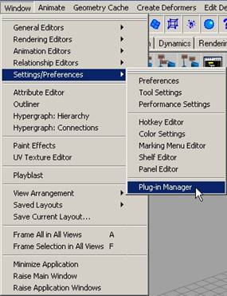

To install the exporter, simply place the plugin file ("maya2dtsExporter.mll" for Windows and "Maya2DTSExporter.lib" for OS X) in the user plugins directory:
Windows: My
Documents\maya\7.0\plug-ins
OS X: Home folder, Library/Preference/AliasWavefront/maya/7.0/plug-ins
To install the dtsUtility MEL script, place the script file ("dtsUtility.mel") in the user scripts directory:
Windows: My
Documents\maya\7.0\scripts
OS X: Home folder, Library/Preferences/AliasWavefront/maya/7.0/scripts
Make sure that Maya isn't running, as it loads plugins on start up. After you place the file in the plugins directory, start up Maya.
Once Maya has started, we need to make sure the plugin is loaded, and make it auto-load from now on. To do this, go to "Window menu > Settings/Preferences > Plugin Manager..."


Make sure the boxes for "loaded" and "auto-load" are checked. Now the exporter will load up when you load Maya.
But we still need to access the dtsUtility script. Open the script editor by clicking the button in the bottom right of the main Maya window.

This will bring up the script editor. You can run the script by typing:
dtsUtility;
into the script editor and pressing enter on the numpad. If all is well you will see the DTS Utility window come up.

Now we need to make a button so it is easier to get to the utility. First go to the script editor (or re-open it if you closed it). Highlight the command you just typed in....

and then click and drag the words up to your shelf. It will look like this:

Now you can click this button to open the DTS Utility window.
That's it, the exporter is
installed! Lets move on to Exporting a
Simple Shape.